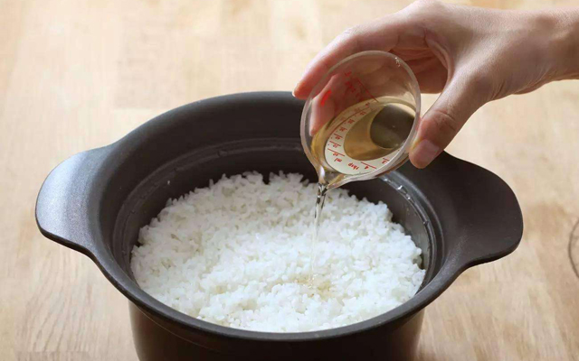

×
×
×
×
米饭夹生或许大家常常听说，具体是什么原因导致的，可能好多人都还不清楚。所谓夹生，就是指米饭还没有熟。出现夹生的原因一般有2个：其一可能是水放少了；其二就是火候没有掌握好（自己爸爸妈妈那个年代基本上都是烧火做饭，火的大小掌握不均匀是很正常的）。夹生饭虽然没有熟，但是也不能直接扔掉，不然太浪费了，可以想办法再次煮熟就可以了，因此下面就一起来看看

一、米饭夹生了怎么处理
首先要看夹生的程度，对不同程度的夹生饭要采取不同的方法煮熟。具体的处理夹生饭的方法如下：
1、米饭全部夹生
用筷子在米饭里扎几个直通锅底的洞，适当加些温水重新焖一次。先在中间扎一个直通锅底的洞，然后围绕中间这个在四周多扎几个，要均匀。
2、米饭只是表面夹生
将表层翻到中间，加上点水在焖下就行了。加的水量要根据夹生部分的多少来决定。表面夹生的比较多就要多加点水，反之就少加点水。也可以用筷子扎少量几个洞，效果更好点。
3、米饭局部夹生
在夹生处扎洞就好了，然后加适量温水接着焖。 如果不确定还有没别的地方也有夹生，可以把整锅饭翻开，把夹生部分放在中间，加上适量的水继续焖熟。
4、搅拌均匀再蒸
把整锅饭搅动均匀，然后加上适量的米酒焖，不仅能让夹生饭熟透，而且饭还带有米酒的清香，吃起来更加可口。但是对酒精过敏的人要注意不能用这种方法。
5、其他方法
把夹生饭打散，按500克米50克黄酒的比例，把黄酒倒入锅内，用文火焖至黄酒挥发，饭就不夹生了，而且吃不出酒味。

2

分享